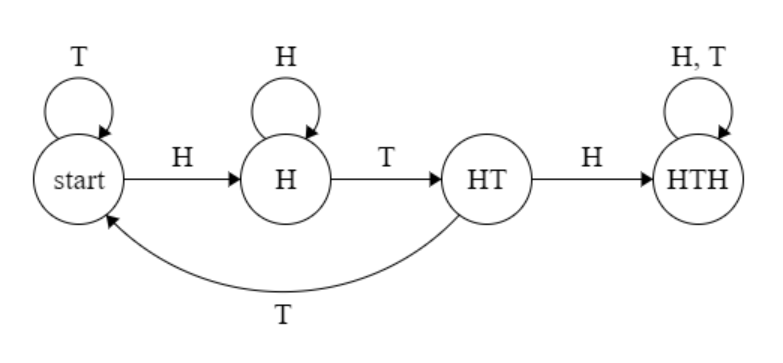
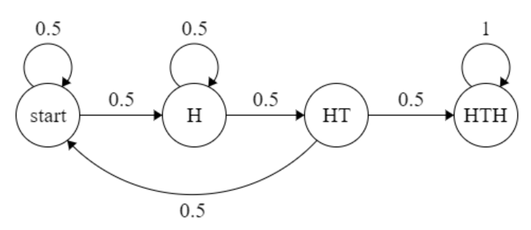
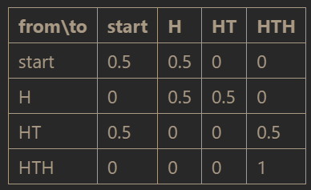
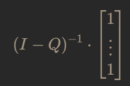
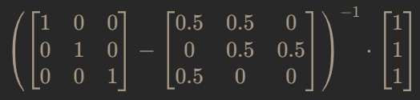
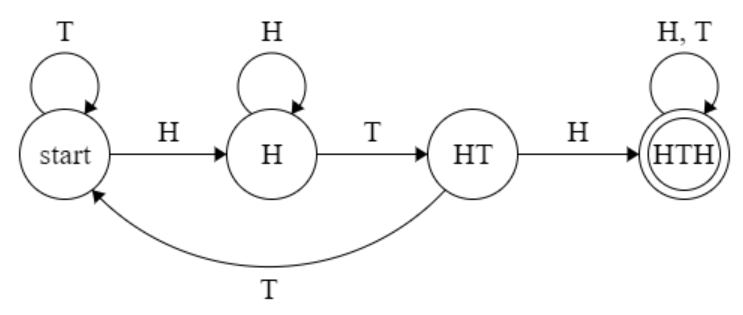
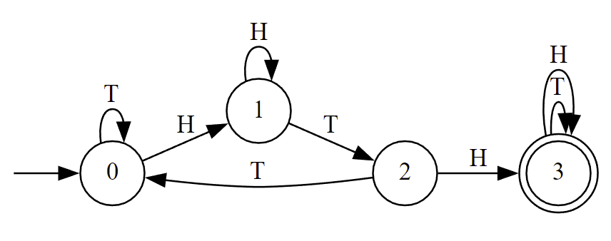

Expected number of RV iterations until sequence seen
To try the results of the below online, please use this Google Colab notebook.
Given:
- An RV X with n finite discrete outputs \mathcal A = [a_1, \dots, a_n] and associated probabilities [\mathbb P(a_1), \dots, \mathbb P(a_n)]
- A sequence \mathcal I = [i_1, \dots, i_m] where 1\leq i \leq n \; \forall i\in \mathcal I of indices of outputs of X
Example: RV X, a fair coin with \mathcal A = [H, T] and associated probabilities [0.5, 0.5], and \mathcal I = [1, 2, 1] which corresponds to a sequence of H, T, H.
Desired: Expected number of simulations of X before seeing the sequence mapped to by \mathcal I
Example: Following from the above example, we would create a DTMC to model this scenario, get the corresponding matrix, and use a formula to determine the expected number of steps to the absorbing state from the start state.
Here's the state machine:

And here's the DTMC:

The matrix which corresponds to this DTMC is as follows:

The numerical part of this matrix is of the form
which means that we can use the following formula to determine the expected number of steps from any state to the absorbing state:

Plugging into the formula gives:

We can use Octave to compute this easily:
octave
([1,0,0;0,1,0;0,0,1] - [0.5,0.5,0;0,0.5,0.5;0.5,0,0])^-1 * [1;1;1]
which gives the following:
ans =
10
8
6
So the expected number of steps until we see the sequence H,T,Hfrom the starting state is 10.
Checking empirically
Let's verify empirically that the expected number of steps above is correct.
import random
def coin_flip():
if random.random() < 0.5:
return 'H'
return 'T'
def expected_number_of_steps_until_seq(seq : str, trials : int, rv) -> float:
total_steps = 0
length = len(seq)
for _ in range(trials):
this_seq = ''
while this_seq[-length:] != seq:
this_seq += rv()
total_steps += 1
return total_steps/trials
print(expected_number_of_steps_until_seq('HTH', 1_000_000, coin_flip))
9.993549
As expected, the average number of steps is 10.
Automation/programming
The hardest part of automating this calculation is the generation of the state machine, from which the matrix and relevant calculation follow easily. The creation of the state machine is typically a manual process, but if we are trying to do this generally for any sequence (without resorting to empirical means), we should experiment with alternative methods.
One method for generating state machines programmatically is by converting a regular expression into a DFA, or deterministic finite automaton. In our use case, we want to have a regular expression for a string that contains our desired sequence. It's fine if it has the sequence multiple times. This may be counterintuitive because in our experiment we'll stop as soon as the sequence is seen, and so we might think not to accept the string if it contains the sequence more than once - but in fact, the DFA will accept the string as soon as it's seen, and after that it's effectively stopped computing.
Here's what the DFA looks like for our above example:

The only difference from the first image is that the last state is marked as an accepting, or final, state as indicated by the double circle.
The regular expression to which this DFA corresponds is as follows:
(H|T)*HTH(H|T)*
This can be translated as "any number of H's and/or T's (the asterisk means "zero or more"), and somewhere in there is a sequence of HTH, and then any number of H's and/or T's again". This is a simple regular expression to generate, so the only work left to do should be to just convert the generated regex to a DFA, and then use the DFA as a DTMC by assigning probabilities to the RV outputs along the edges of the automaton.
Luckily, there are existing implementations of this logic. In this instance we're using PADS from David Eppstein at U.C. Irvine.
from Automata import RegularLanguage
L = RegularLanguage('(H+T)*HTH(H+T)*')
dfa_L = L.recognizer.minimize().renumber()
states = list(dfa_L.states())
print('States:')
print(*states)
transitions = dfa_L.transitions()
print('Transitions:')
print('\n'.join(str(t[0]) + ' -> ' + str(t[1]) + ' | ' + t[2] for t in transitions))
dfa_L.to_dot('out')
States: 0 1 2 3 Transitions: 0 -> 1 | H 0 -> 0 | T 1 -> 1 | H 1 -> 2 | T 2 -> 3 | H 2 -> 0 | T 3 -> 3 | H 3 -> 3 | T
This correctly gives the following visualization:

Now we need some way to turn the DFA into a DTMC.
def dfa_to_dtmc(dfa_states, dfa_transitions, char_prob_map : dict):
matrix = [[0] * len(dfa_states) for _ in dfa_states]
for state in dfa_states:
for _,to_state,c in (t for t in dfa_transitions if t[0] == state):
matrix[state][to_state] += char_prob_map[c]
return matrix
matrix = dfa_to_dtmc(states, transitions, {'H' : 0.5, 'T' : 0.5})
print('\n'.join('\t'.join(str(y) for y in x) for x in matrix))
0.5 0.5 0 0 0 0.5 0.5 0 0.5 0 0 0.5 0 0 0 1.0
This matrix looks accurate. Let's continue by using Python to compute the result of the formula we had for the expected number of steps.
import numpy as np
np_matrix = np.matrix(matrix)
Q = np_matrix[0:len(states)-1,0:len(states)-1]
I = np.identity(len(states)-1)
ones = np.ones_like(Q[:,0])
output = (I - Q)**(-1) * ones
print('Full results:')
print(output)
print('Expected steps from start:')
print(float(output[0][0]))
Full results: [[10.] [ 8.] [ 6.]] Expected steps from start: 10.0
As expected, we have the same result as from our Octave code above. Now we can turn all of this into one big function to just return the expected number of steps.
One big function/code cell
from Automata import RegularLanguage
import numpy as np
def exact_expected_number_of_steps(sequence : str, probabilities : dict):
'''Expected number of steps until `sequence` reached by RV defined by `probabilities`'''
assert set(sequence) <= set(probabilities.keys()), 'Sequence/prob dict mismatch'
assert abs(sum(probabilities.values()) - 1) < 0.000001, 'Sum of probabilities != 1'
outputs = probabilities.keys()
L = RegularLanguage('({})*{}({})*'.format('+'.join(outputs), sequence, '+'.join(outputs)))
dfa_L = L.recognizer.minimize().renumber()
states = list(dfa_L.states())
transitions = dfa_L.transitions()
matrix = [[0] * len(states) for _ in states]
for state in states:
for _,to_state,c in (t for t in transitions if t[0] == state):
matrix[state][to_state] += probabilities[c]
np_matrix = np.matrix(matrix)
Q = np_matrix[0:len(states)-1,0:len(states)-1]
I = np.identity(len(states)-1)
ones = np.ones_like(Q[:,0])
output = (I - Q)**(-1) * ones
return float(output[0][0])
result = exact_expected_number_of_steps('HTH', {'H' : 0.5, 'T' : 0.5})
print(result)
10.0
And that's it!